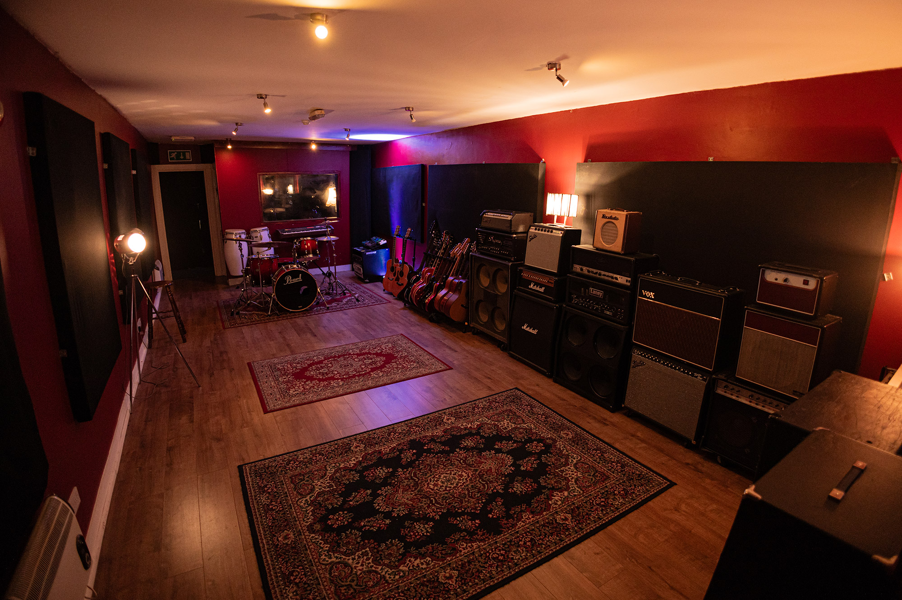

Founded in 2011 by close friends Graham and George, Half Bap Recording
Studios is located in the heart of Belfast city centre. Tucked away on
the cobbled streets of Commercial Court, the studio overlooks the
vibrant and picturesque Cathedral Quarter.
Our bespoke facility features a spacious live room, control room, and
vocal booth—each acoustically treated to deliver the highest quality
sound. Combined with a diverse collection of instruments and
professional audio gear, we’ve created a space designed to inspire.
Whether you're recording your first demo or a full album, our relaxed
and creative environment allows artists to perform at their best.